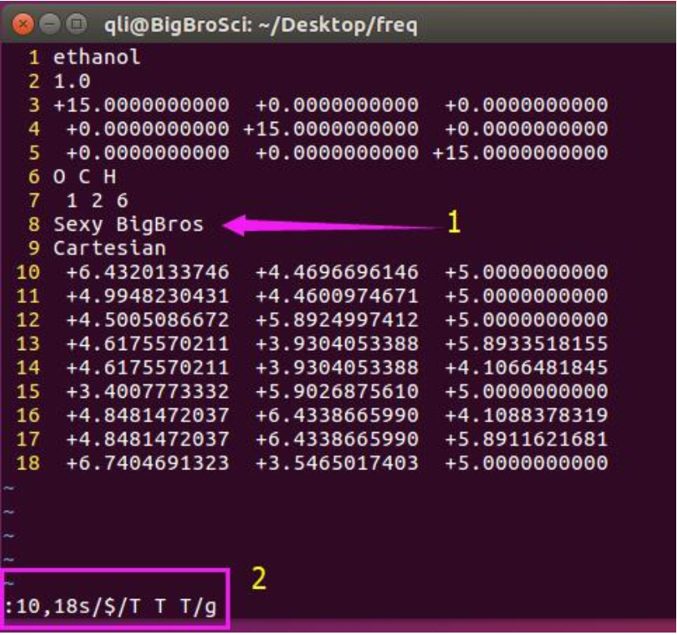
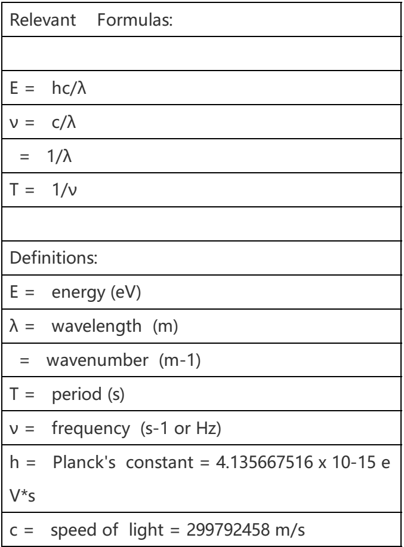

频率计算
虚频也作为收敛的一个判据
应用场景：
- 确定结构是否稳定;
- 看振动方式和大小,用来和实验对比,棋博士最新的文章就是一个非常好的例子;
- 反应热,反应能垒, 吸附能等的零点能（ZPE）矫正;
- 确认过渡态(有一个振动的虚频)
- 热力学中计算entropy,用于计算化学势,微观动力学中的指前因子和反应能垒
计算步骤：
依照前面所述进行优化
将CONTCAR复制为POSCAR
修改INCAR，主要修改参数如下：
IBRION=5 #freq calc POTIM=0.02 #一个更小的值，default:0.015 NSW=1 # any value which >1 NFREE=2 # do not set NFREE=1，添加这一个参数,表明原子在某一方向上正反两个方向移动 # NCORE=4 并行计算频率时VASP会罢工 EDIFFG=1E-6 #严格一些，需要保证准确查看频率分析的OUTCAR,OSZICAR等输出文件
当你设置了NFREE=2的时候，频率计算需要1+N*6步。N为体系中的振动的原子数
vi command：: set nu 显示文本的行数，取消行数可以通过 :set nonu
固定催化剂部分计算振动频率：
三个方向都允许：T T T 三个方向上都不允许为 F F F x移动，y和z方向上固定为： T F F x和y方向上固定，z方向振动： F F T
通过Vim的实现 ：

图中1：插入一行，告诉VASP我们要选择性的固定某些原子或者在某些方向上； 图中2： 10,18s 中 s 代表替换（substitute）的意思，这里表示我们选中了第10到18行，10和18之间有个逗号表示连续；10,18s后面用一个 / 分开，紧跟着你我们要替 换的内容；$在这里是末尾的意思，
$/T T T我们要把每一行的最后替换成 T T T 后面再用一个/分开，加上g 表示 global 全部替换的意思。
p4vasp亦可
振动频率可视化：
Linux安装jmol
jmol.sh OUTCAR工具-原子库选择器
也可以右键-模型中选中
原子库中选择最下方：振动，开启振动
OUTCAR中的原信息：
1）1 f = 代表第一个振动模式，细心的你仔细观察，会发现每一行有四个单位的数值：THz, 2PiTHz, cm-1,和meV，这四个是完全等同的； 2）下面一行为坐标ＸY Z和每个原子在x y z方向上的振动大小； 3）X Y Z下面的数字为结构的坐标信息（Cartesian坐标系），dx dy dz 为振动的具体数值； 4)后面的振动模式的频率和第一个的格式一样。
频率单位的换算 ：

OUTCAR频率信息的提取 ：
grep THz OUTCAR grep 2PiTHz OUTCAR grep cm-1 OUTCAR grep meV OUTCAR综合这些因素，对于分子的振动频率来说（注意：声子谱不适用）一般低于100cm-1的频率可以忽略。严格点可以降到 50 cm ，也就是说：如果你在计算中发现有个50cm 左右的虚频，完全可以不考虑
零点能校正 :
输出共有11列（列之间用空格分开）：我们要的零点能在第10列，使用下面的命令：
grep 'f =' OUTCAR | awk '{print $10}如果想同时输出第1和10两列：
grep 'f =' OUTCAR | awk'{print $1 " "$10}'1 和 $10 之间有2个 双引号：" "，两个双引号里面有一个空格用来分开），否则两列会连在一起。
这里我们提取的能量为：hv ！！！而零点能为1/2 hv！！！
将所有振动的能量求和：
grep 'f =' OUTCAR | awk '{print $10}' | paste -sd+ |bc不要忘记除以2，换算为eV除以1000
A）首先结构优化完毕后我们会得到分子的能量：E0 B）频率计算后我们会得到分子的零点能：ZPE C）零点能校正之后的乙醇分子能量为： E_ZPE = E0 + ZPE D）A和B得出的结果直接相加即可，不要想太多。
怎么计算过渡态和反应热的零点能校正
对一个反应：IS --> TS --> FS IS: Initial State 反应物 TS: Transition State 过渡态 FS: Final State 产物
1）优化反应物IS和产物FS的结构，获得能量：E(IS),E(FS); 2）对反应物和产物进行频率计算，获得各自的零点能：ZPE(IS), ZPE(FS)。 3）搜索过渡态，获得结构和能量E(TS); 4）过渡态频率分析，获得零点能ZPE(TS)
不考虑零点能的反应能垒(E )和反应热(ΔE)： E = E(TS) – E(IS) ΔE =E(FS) – E(IS)
考虑零点能校正： $E = E{ZPE}(TS) – E{ZPE}(IS) = E(TS) +ZPE(TS) – E(IS) – ZPE(IS) = E + ZPE(TS) – ZPE(IS)$同理: ΔE =ΔE + ZPE(FS) –ZPE(IS)
两个处理方式： a. 先获取未校正的结果，然后把零点能各自相减； b. 先将各个物种进行零点能校正，然后在计算反应能垒或者反应热效果是一样的
频率计算的时候，是不是体系中所有的原子都放开 ：
例子A: 乙醇在Cu(111)表面上的吸附，计算吸附热的零点能校正 $\ce{CH3CH2OH + Cu(111) -> Cu(111)-CH2CH3OH}$ 此时，Cu(111)表面我们在计算频率的时候是要固定住的！只振动乙醇分子即可。 例子B： 计算CO在Cu(111)表面上的吸附： 同A，固定Cu(111) 表面，如果你只关心CO在垂直表面上的振动，那么CO的xy方向便可以固定住，在坐标后面为：F F T 例子C： 苯酚在Cu(111)表面上O—H键断裂活化能的零点能校正： 在这里我们拿苯酚作为例子，很多时候，计算的对象比较大，全部频率优化非常耗时，那我们就得选择性地固定住一部分，只关心关键的局域部分。这个例子中我们主要讨论零点能对O—H键断裂活化能的影响，因此我们可以把苯环的部分固定住，只放开O和H原子进行振动。
还有一点要注意的是：IS，TS和FS中，所固定和放开的原子必须一致！！！
获取虚频命令：
grep 'f/i' */OUTCAR | awk '{print $1 "\t " $2 "\t" $8 "\t " $9 "\t" $10 "\t" $11}'获取时间命令：grep Elapsed */OUTCAR | sort -n获取零点能：for i in * ; do echo $i $(cd $i ; fsum ; cd $OLDPWD);done | sort –nPOTIM太小的时候，对零点能影响很大
POTIM 太大的时候，会搞出来超大号的虚频
5.1 IBRION = 5 （告诉VASP我们要算频率） 5.2 POTIM = 0.015 5.3 NFREE = 2 5.4 ENCUT和原来一样 5.5 PREC = Normal 5.6 EDIFF = 1E-5 或者 1E-6 5.7 KPOINTS Gamma点即可。